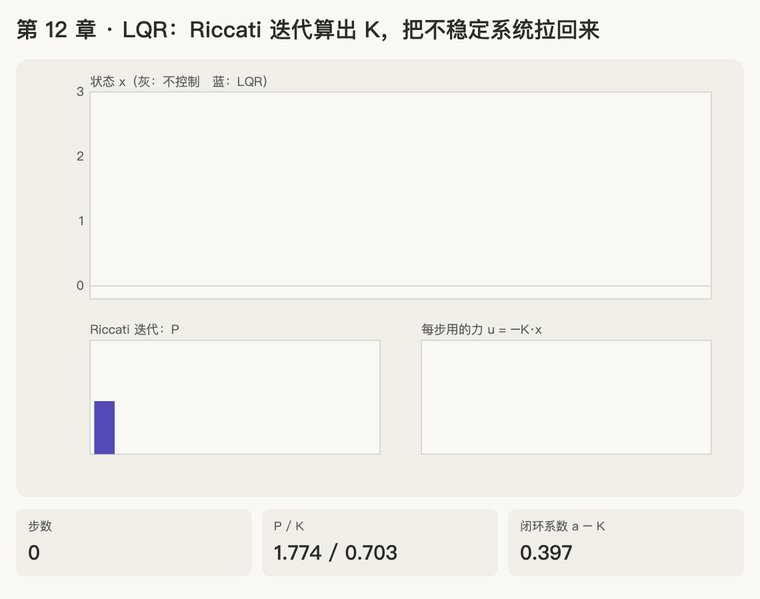

第 12 章 · LQR：模型已知、线性、二次代价时，Bellman 方程有闭式解
本章回答：如果环境的公式完全知道，而且是线性的，最优控制还需要强化学习吗？LQR 的反馈增益 K 是怎么算出来的？q 和 r 这两个旋钮各调什么？它和强化学习的价值函数是什么关系？
讲解日期：2026-11-20 · 上一章：第 11 章 SuperMimic 全流程 · 下一章：第 13 章 线性倒立摆与 ZMP
对应原文：Underactuated Robotics「Linear Quadratic Regulators」（robot-motion-rl/materials/text/underactuated-lqr.txtL10–L16 推导与 Riccati 方程，L38–L39 倒立摆 / cart-pole 平衡，L43–L45 有限时域）；Modern Robotics 第 11 章（robot-system-architecture/materials/text/modern-robotics-lynch-park.txt）
本章缩写：LQR = Linear Quadratic Regulator（线性 / 二次 / 调节器）；q、r：状态代价权重、控制代价权重；P：价值函数的系数（V(x) = P·x²）；K：反馈增益（u = −K·x）；Riccati：意大利数学家的姓，Riccati 方程是 LQR 里求 P 的那个方程；HJB = Hamilton–Jacobi–Bellman（三位数学家的姓：连续时间的 Bellman 方程）。全部缩写见 附录 · 缩写与术语表第二部分导读：第 1–11 章讲的是「用学习做运控」。第 12–15 章倒过来看：环境模型已知时，经典控制怎么直接算出控制量。它们是 MPC + WBC 这条路线的数学底子，也是理解「强化学习在省什么、在付什么」的参照。第 16–18 章再回到学习路线，补上动作风格、可微仿真和上真机。
讲解
第一步：把非线性系统在平衡点附近拉直（2026-11-20）
类比：地球是圆的，但你家院子可以当成平的。 离平衡点不远时，弯曲的动力学可以近似成直线。
倒立摆竖直向上是不稳定的平衡点：\(\ddot\theta = \frac{g}{l}\sin\theta + u\)。θ 很小时 \(\sin\theta \approx \theta\)，
g = 9.8、l = 1 m 时系数是 9.8：偏一点点，加速度就往同一个方向放大，所以不管它就会倒。cart-pole、四旋翼、人形站立都能这样在平衡点附近线性化（原文 L38–L39）。
为了能在纸上算，本章用一维离散版：\(x_{t+1} = a\,x_t + b\,u_t\)，取 a = 1.1（每步自己放大 10%，不稳定）、b = 1。
一句话：在平衡点附近，非线性动力学可以近似成 \(x_{t+1} = ax + bu\)。
第二步：二次代价 + 已知模型 = 价值函数是抛物线（2026-11-20）
类比：《从零学强化学习》第 8 章的 Bellman 方程，只是这次「环境」写成了公式，「奖励」写成了二次惩罚。
代价（越小越好）：每步 \(q\,x^2 + r\,u^2\)。q 惩罚「偏离」，r 惩罚「用力」。最优价值函数（还要付的总代价）猜成抛物线 \(V(x) = P\,x^2\)，代进 Bellman 方程：
对 u 求导令其为 0，得到线性的最优控制
再代回去，消掉 \(x^2\)，得到 P 要满足的 Riccati 方程：
和强化学习的对应：P 就是价值函数，K 就是策略；只是因为模型已知、线性、代价二次，Bellman 方程能直接解，不用采样、不用训练（原文 L10–L16 用 HJB 推了连续时间版本）。
一句话：线性 + 二次时，价值函数是 \(Px^2\)，策略是 \(u = -Kx\)，都有公式。
第三步：Riccati 迭代：一步一步算出 P（2026-11-20）
类比：价值迭代（《从零学强化学习》第 12 章），只是每次更新的不是一张表，而是一个数 P。
从 P = q 开始反复代入 Riccati 方程。a = 1.1、b = 1、q = 1、r = 1：
| 迭代 | 0 | 1 | 2 | 3 | … | 收敛 |
|---|---|---|---|---|---|---|
| P | 1.000 | 1.605 | 1.746 | 1.769 | … | 1.774 |
\(K = 1.1 \times 1.774 / (1 + 1.774) \approx\) 0.703，闭环系数 \(a - bK = 1.1 - 0.703 =\) 0.397。原来每步放大 1.1 倍，现在每步缩到 0.397 倍：从 x = 1 出发，5 步后只剩 0.0098。
迭代的次数对应「还剩几步」：有限时域 LQR 就是从最后一步往前推，推得足够久就收敛到无限时域的解（原文 L43–L45）。
一句话：Riccati 迭代几步就收敛，得到一个固定增益 K，把不稳定的系统拉稳。
第四步：q 和 r 两个旋钮（2026-11-20）
类比：开车时「多在乎偏离车道」和「多在乎方向盘打得猛」的权衡。
| q | r | K | 闭环系数 a − bK | 5 步后 x |
|---|---|---|---|---|
| 1 | 1 | 0.703 | 0.397 | 0.0098 |
| 1 | 10 | 0.370 | 0.730 | 0.2071 |
| 10 | 1 | 1.009 | 0.091 | 0.0000 |
r 大 → 舍不得用力 → K 小、回得慢；q 大 → 很在乎偏离 → K 大、回得快但用力猛（真机上会撞到力矩饱和，第 1 章）。
LQR 和 RL 的分工：LQR 要模型已知、而且只在平衡点附近有效（离开太远线性化就不准）；RL 不要模型，能处理接触、大幅动作、非线性，但要大量样本。MPC（第 14 章）是中间路线：每一刻都在当前状态附近重新线性化、重新解一个小优化。
一句话：q 管「在乎偏离」，r 管「舍不得用力」；LQR 只在平衡点附近、模型已知时好用。
动画演示：LQR 把不稳定系统拉回来

可交互版：animations/12-lqr.html（滑块：q、r、系统系数 a）。
怎么看：
- 上图灰线是不加控制的系统（a > 1 会越跑越远），蓝线是 LQR 闭环，从 x = 1 出发（第一、三步）。
- 中间的柱子是 Riccati 迭代里 P 的变化，几步就平了（第三步）。
- 拖 q 和 r：K 和闭环系数跟着变，下方橙线是每步用的力 u = −Kx（第四步）。
练习与作答记录
题 1（第一步）：摆长 l = 0.5 m，线性化后的系数 g/l 是多少？摆越短越容易倒还是越难倒？
作答：（待作答）
题 2（第三步）：a = 1.2、b = 1、q = 1、r = 1，从 P = 1 开始算两次 Riccati 迭代，写出 P₁、P₂ 和用 P₂ 算的 K。
作答：（待作答）
题 3（第四步）：如果 a = 0.9（系统本来就稳定），q = 1、r = 1000，K 大约会是多少（接近 0 还是接近 1）？为什么？
作答：（待作答）
口诀
院子当平地，平衡点附近拉直线；
二次代价配线性模型，价值是抛物线、策略是一条直线；
Riccati 反复代，几步就收敛，P 是价值、K 是策略；
q 在乎偏离、r 舍不得用力，离平衡点远了就不灵。
本章复习卡片
M23（LQR 的 Riccati 方程与 K 的公式；和 RL 价值函数的对应）、M24（q、r 的作用；LQR 的适用范围）
附录 · 延伸阅读
留给以后深入学习用，不影响本章主线。★ 是建议先读的。
推荐阅读
| 读什么 | 读哪里 | 读它为了什么 |
|---|---|---|
| ★ Underactuated Robotics · LQR | robot-motion-rl/materials/text/underactuated-lqr.txt L10–L16、L38–L47 |
HJB 推导、cart-pole 平衡、有限时域 LQR |
| Modern Robotics 第 11 章 | robot-system-architecture/materials/text/modern-robotics-lynch-park.txt |
线性反馈控制、稳定性 |
| 《从零学强化学习》第 8、12 章 | cs285-deep-rl/notes/lessons/08-bellman.md、12-value-iteration.md |
Bellman 方程与价值迭代，LQR 是它的闭式特例 |
| 学习计划 MC-M1 | study-plan.md | 倒立摆上手调 PD vs LQR |
数学原理
- 一阶泰勒展开：\(\sin\theta \approx \theta\)（θ 小时）。
- 二次函数求最小：\(\min_u (\alpha u^2 + 2\beta u)\) 在 \(u = -\beta/\alpha\) 处取到。
- 离散系统稳定：\(x_{t+1} = c\,x_t\) 收敛当且仅当 |c| < 1。
公式清单
| 公式 | 意思 |
|---|---|
| \(x_{t+1} = ax_t + bu_t\) | 线性化后的离散系统 |
| \(V(x) = Px^2\) | 二次价值函数 |
| \(P = q + a^2P - \frac{(abP)^2}{r+b^2P}\) | 离散 Riccati 方程 |
| \(u = -Kx,\ K = \frac{abP}{r+b^2P}\) | LQR 控制律 |
代码对照：把本章的数字用代码算一遍
用 Python + NumPy 把讲义里讲过的数算一遍，不算练习题。代码在仓库本地
robot-motion-rl/solutions/chapter-code/ch12_lqr.py，配套测试tests/test_ch12_18.py，notebook 在notebooks/ch12_lqr.ipynb。Mac 上直接能跑，不需要 GPU：
bash cd robot-motion-rl/solutions/chapter-code uv run python ch12_lqr.py uv run pytest tests/test_ch12_18.py
讲义 ↔ 代码（系统和权重都是编的）：
| 讲义 | 公式 | 写法 | 跑出来 |
|---|---|---|---|
| 第一步 线性化 | g/l | linearize_pendulum() |
9.8 |
| 第三步 Riccati | 反复代入 | solve_lqr(1.1, 1, 1, 1) |
P：1、1.605、1.746、1.769 → 1.774；K = 0.703 |
| 第三步 闭环 | (a − bK)ˣ | simulate(1.1, 1, K, 1, 5) |
5 步后 0.0098 |
| 第四步 调权重 | 同上 | solve_lqr(1.1, 1, q, r) |
K = 0.370、1.009 |
关键几行：
p = q + a * a * p - (a * b * p) ** 2 / (r + b * b * p) # Riccati：一次价值迭代
k = a * b * p / (r + b * b * p) # 最优增益
x = (a - b * k) * x # 闭环：u = −Kx 代回系统
代码里才看得到的 1 件事：
- 迭代从 P = q 开始，相当于「只剩最后一步」时的价值；迭代 200 次是为了保险，实际 10 次以内就和收敛值差不到 0.001。
自己改一改（不影响练习答案）：
- 把 b 从 1 改成 0.1（控制效果弱），看 K 和闭环系数怎么变。
- 把 a 改成 2.0，看 r 要小到多少闭环才能稳。